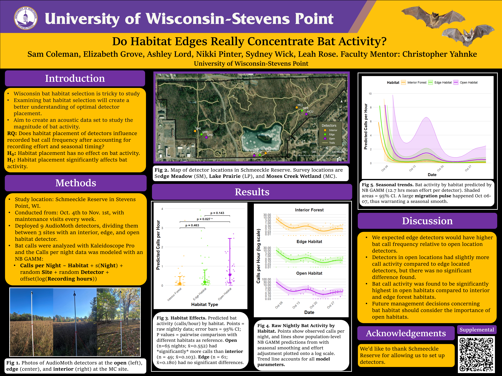
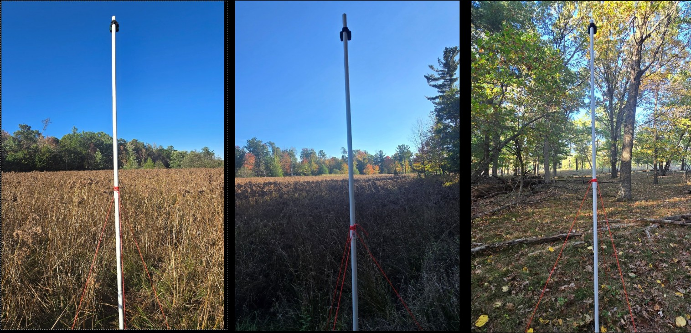
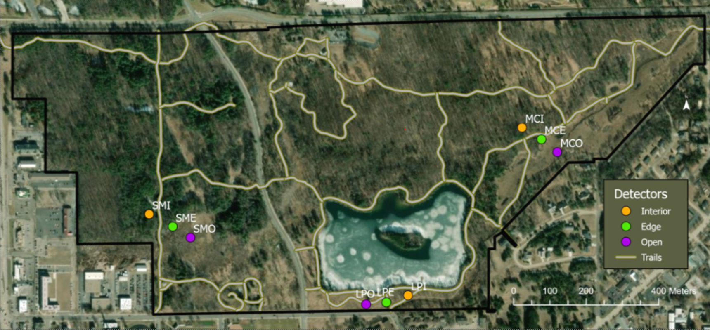
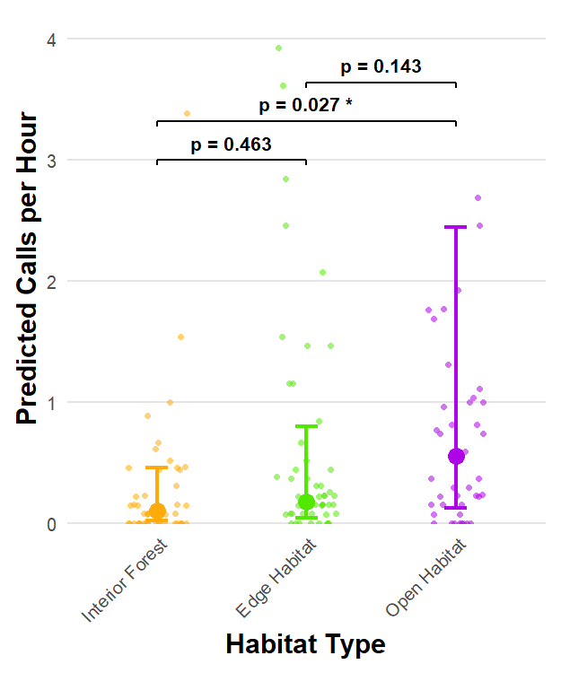
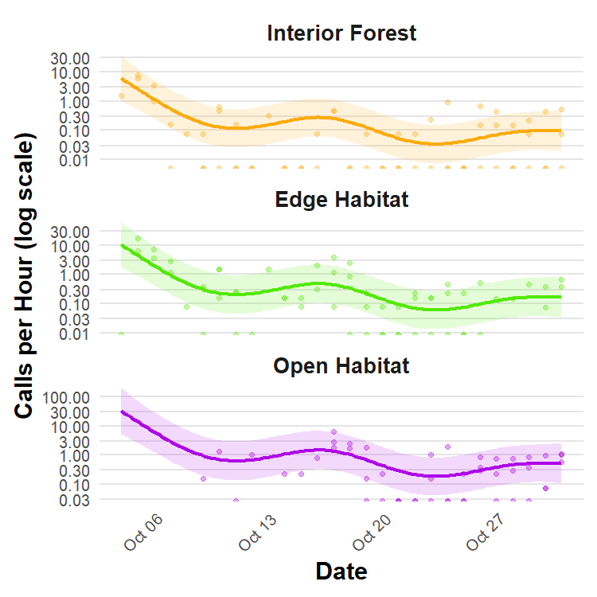
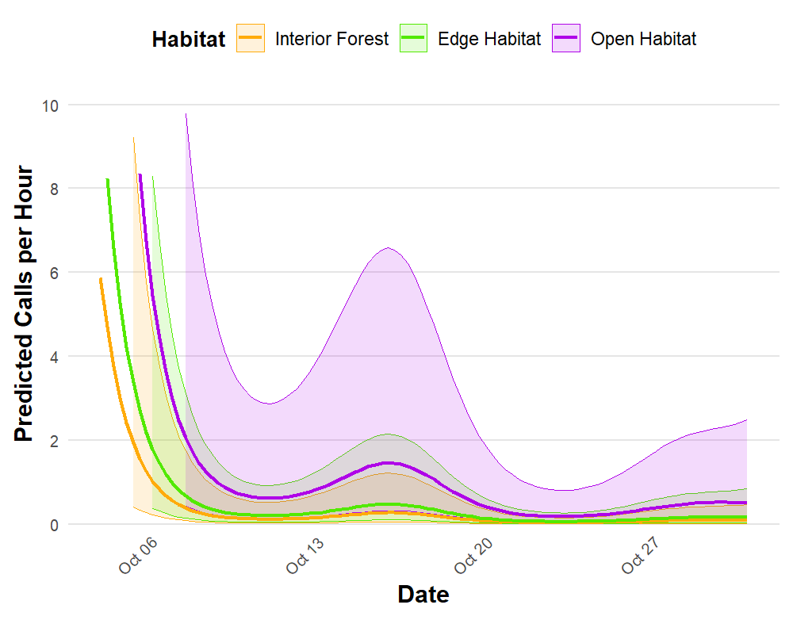

Abstract
Understanding habitat selection by bats in central Wisconsin is essential in improving micrositing. The purpose of this study is to establish an acoustic data set in Schmeeckle Reserve in Stevens Point, WI, and to examine how habitat types can be used as proxies to understand optimal detector placement to study the magnitude of bat activity. We deployed nine AudioMoth ultrasonic detectors across three study sites from October 4th until November 1st. Each site contained an interior, edge, and open habitat. Study sites were spaced at least 500 meters apart to ensure data was independent. Detector orientation was standardized with interior and open detectors facing opposite directions ~100 m apart, while edge detectors bisect the other two, thus creating a nested sampling scheme of semi-independent data within sites. We maintained the detectors once every week, updating SD cards and batteries. All bat calls were auto identified using Kaleidoscope Pro. To account for unequal recording effort, nightly call counts were modeled using a negative binomial generalized additive mixed model with recording duration included as an offset. The model accommodated over dispersed counts, seasonal temporal variation, and the hierarchical structure of detectors nested within sites. Activity rates were significantly higher in open habitats than forest interior (IRR=5.37, p=0.027), while edge habitats did not differ significantly from interior forest (IRR=1.75, p=0.463). Future management decisions concerning bat habitat should consider the importance of open habitats, as call activity was significantly higher in open habitats relative to interior forest, despite common assumptions of elevated edge activity.
Scientific Poster

Key Findings
- The open habitat had significantly higher bat activity than the interior forest habitat with an incidence rate ratio of 5.37 and a p-value of 0.027.
- The open habitat had a slightly higher, but not significantly higher bat activity than the edge habitat with an incidence rate ratio of 3.07 and a p-value of 0.143.
- The edge habitat had a slightly higher, but not significantly higher bat activity than the interior forest habitat with an incidence rate ratio of 1.75 and a p-value of 0.463.
- Bats being found in open habitats more than interior forest habitats is contrary to the common assumption that bats are edge specialists. Although, a large migration pulse of silver-haired bats was observed during the study which may have contributed to the higher activity in open habitats as they are known to be open habitat specialists.
Selected Figures
{kind=link}

{kind=link}

{kind=link}

{kind=link}

{kind=link}

Methodology
Conferences & Symposiums
- 2026 Jim and Katie Krause College of Natural Resources Symposium
- 2026 Annual Wisconsin The Wildlife Society Meeting